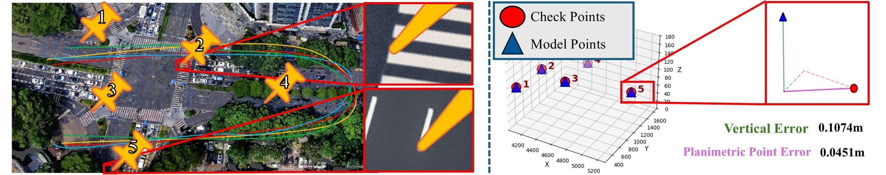
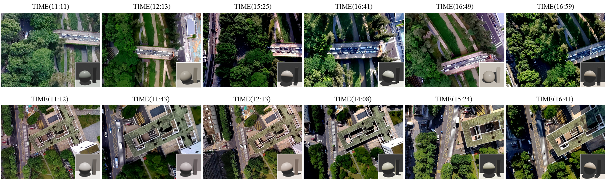

Abstract
Existing outdoor 3D reconstruction benchmarks often assume relatively stable appearance and limited illumination variation. UAVLight introduces a benchmark tailored to illumination-robust reconstruction in real UAV scenes, with large-scale outdoor captures collected across multiple time slots under significantly changing sunlight and shadow conditions. The benchmark is designed to evaluate whether reconstruction methods remain reliable when similar viewpoints exhibit large appearance shifts due to time-of-day dependent lighting. In addition to diverse real-world UAV scenes, UAVLight provides a paired cross-light evaluation protocol and standardized quantitative comparisons across representative NeRF-based and Gaussian-based methods, enabling systematic study of illumination robustness in outdoor aerial reconstruction.
Dataset
UAVLight focuses on large-scale outdoor UAV captures with multi-time-of-day illumination variation, supporting robust reconstruction, cross-light evaluation, and analysis of appearance changes under real lighting conditions.
Capture Setup
UAVLight is captured with real UAV platforms in outdoor scenes across multiple time slots, enabling consistent viewpoint comparison under diverse sunlight conditions.

UAVLight contains large-scale outdoor scenes collected under significantly different lighting conditions across the day.

Dense point clouds from benchmark scenes illustrate the geometric diversity of urban and outdoor UAV environments.
What UAVLight Benchmarks
Rather than proposing a new method, UAVLight is designed as a benchmark to measure how reconstruction quality changes when illumination varies strongly across otherwise similar viewpoints.
Illumination Variation and Protocol
Unlike conventional outdoor reconstruction benchmarks, UAVLight explicitly highlights time-of-day dependent illumination variation. The benchmark includes ground-truth sunlight directions computed from GPS and timestamps, making it possible to analyze not only appearance change, but also its physical relationship with solar position.

Illumination variations across similar viewpoints at different times of day. Bottom-right shows ground-truth sunlight directions from GPS and timestamps.
Benchmark
We report averaged quantitative results over 12 UAVLight scenes using PSNR, SSIM, and LPIPS, together with total training time.
Lighting is estimated from one subset of views and applied to another subset captured at the same time slot, enabling a controlled cross-light evaluation protocol.
Benchmark Focus
- Real outdoor UAV scenes captured across multiple time slots.
- Large appearance shifts from changing sunlight and shadows.
- Cross-light evaluation protocol for illumination robustness.
- Comparison across both NeRF-style and 3DGS-style methods.
Best Averaged Results
| Method | Training Time ↓ | Avg. PSNR ↑ | Avg. SSIM ↑ | Avg. LPIPS ↓ |
|---|---|---|---|---|
| NeRF-W | 709 hr | 18.41 | 0.578 | 0.458 |
| NeRF-OSR | 360 hr | 18.55 | 0.490 | 0.555 |
| GS-W | 85 hr | 21.27 | 0.741 | 0.186 |
| W-GS | 93 hr | 21.85 | 0.725 | 0.242 |
| LumiGS | 71 hr | 22.19 | 0.786 | 0.156 |
Qualitative Results
UAVLight includes qualitative comparisons across scenes and across time slots to reveal how illumination changes affect reconstruction quality.

Visualization of the reconstruction results from different baselines on five UAVLight scenes.

Visualization of the reconstruction results from different baselines on Town with five different time slots.
Download and Resources
Replace the placeholder links below with the final release links for the dataset, paper, codebase, and supplementary materials.
Resources
A recommended release package includes images, camera parameters, splits, scene metadata, evaluation scripts, and baseline checkpoints where applicable.
License and Usage
UAVLight is intended for academic and non-commercial research use.
You may share and adapt the dataset for research purposes with proper attribution. Commercial use is not permitted without explicit permission from the authors.
BibTeX
@inproceedings{uavlight2026,
title = {UAVLight: A Benchmark for Illumination-Robust 3D Reconstruction in Unmanned Aerial Vehicle (UAV) Scenes},
author = {Du, Kang and Liao, Xue and Xia, Junpeng and Guo, Chaozheng and Gu, Yi and Guan, Yirui and ShengHuang and Wang, Zeyu},
booktitle = {Proceedings of the IEEE/CVF Conference on Computer Vision and Pattern Recognition (CVPR)},
year = {2026}
}